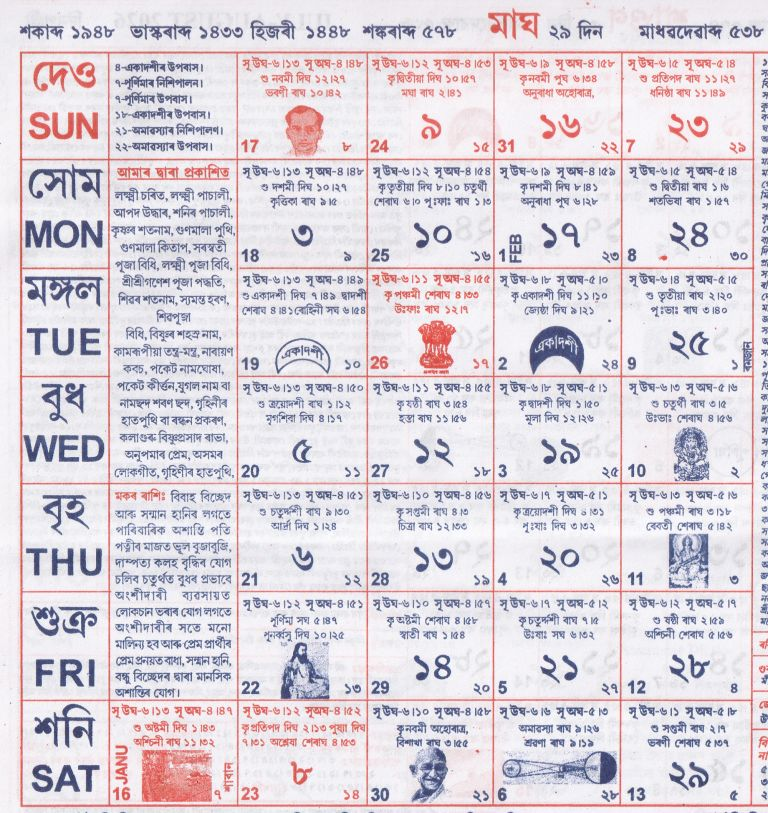

<table border="1">
<tbody>

<tr>
<td style="text-align:center;"><strong>মাঘ</strong></td>
</tr>

<tr>
<td>

</td>
</tr>

<tr>
<td>
<p>
<strong>১ মাঘ</strong> – ধৰ্ম্মাচাৰ্য শ্রীশ্রীভগবান দেৱৰ আবিৰ্ভাৱ তিথি, ভোগালী বিহু, বিভিন্ন ঠাইত পূজা আৰু সভা।<br><br>

<strong>২ মাঘ</strong> – শিল্পী দিৱস, জ্যোতিপ্ৰসাদ আগৰৱালা আৰু দ্বিপেন চন্দ্ৰ শৰ্ম্মাৰ স্মৃতি দিৱস।<br><br>

<strong>৩–৭ মাঘ</strong> – বিভিন্ন ঠাইত নাম-কীৰ্ত্তন, সভা, উৎসৱ আৰু পূজা অনুষ্ঠান।<br><br>

<strong>৮ মাঘ</strong> – নেতাজী সুভাষ বসুৰ জন্ম জয়ন্তী।<br><br>

<strong>১১ মাঘ</strong> – গণতন্ত্ৰ দিৱস পালন।<br><br>

<strong>১৩ মাঘ</strong> – স্বামী বিবেকানন্দৰ জন্মতিথি।<br><br>

<strong>১৫ মাঘ</strong> – মহাত্মা গান্ধীৰ তিৰোধান দিৱস।<br><br>

<strong>১৬ মাঘ</strong> – মে-দাম-মেফি দিৱস।<br><br>

<strong>২২ মাঘ</strong> – বলয়গ্রাস সূৰ্যগ্ৰহণ (ভাৰতত অদৃশ্য)।<br><br>

<strong>২৫ মাঘ</strong> – ৰমজান মাহৰ আৰম্ভ।<br><br>

<strong>২৬ মাঘ</strong> – শ্ৰীশ্ৰী গণেশ পূজা।<br><br>

<strong>২৭ মাঘ</strong> – লক্ষ্মী-সৰস্বতী পূজা।<br><br>

<strong>২৯ মাঘ</strong> – বিভিন্ন ঠাইত মহাযজ্ঞ আৰু ধৰ্মীয় সভা।
</p>
</td>
</tr>

<tr>
<td>
<strong>ৰবিশুদ্ধি:</strong> মেষ, সিংহ, বৃশ্চিক, মীন ৰাশিৰ ১২ মাঘৰ পৰা শুভ।
</td>
</tr>

<tr>
<td>
<strong>গুৰুশুদ্ধি:</strong> মেষ, কৰ্কট, তুলা, ধনু, কুম্ভ ৰাশিৰ বাবে শুভ।
</td>
</tr>

<tr>
<td>
<p>
<strong>জ্যোতিষতত্ত্ব:</strong><br>
এই মাহত জন্ম লোৱা লোক বিদ্বান, শান্তশিষ্ট, ধনবান আৰু ভাগ্যবান হয়। 
বিবাহ আৰু উপনয়ন আদি শুভকৰ্মৰ বাবে এই সময় উপযুক্ত।
</p>
</td>
</tr>

<tr>
<td>
<p>
<strong>শুভ দিনসমূহ:</strong><br>
বিবাহ: ১১, ১২, ১৩, ১৪, ২৭<br>
নামকৰণ: ৫, ৭, ১২, ১৪, ২৭<br>
অন্নপ্ৰাশন: ৫, ২৪, ২৭<br>
গৃহ প্ৰৱেশ: ২২–২৭ (শৰণ দিন)<br>
</p>
</td>
</tr>

</tbody>
</table>
